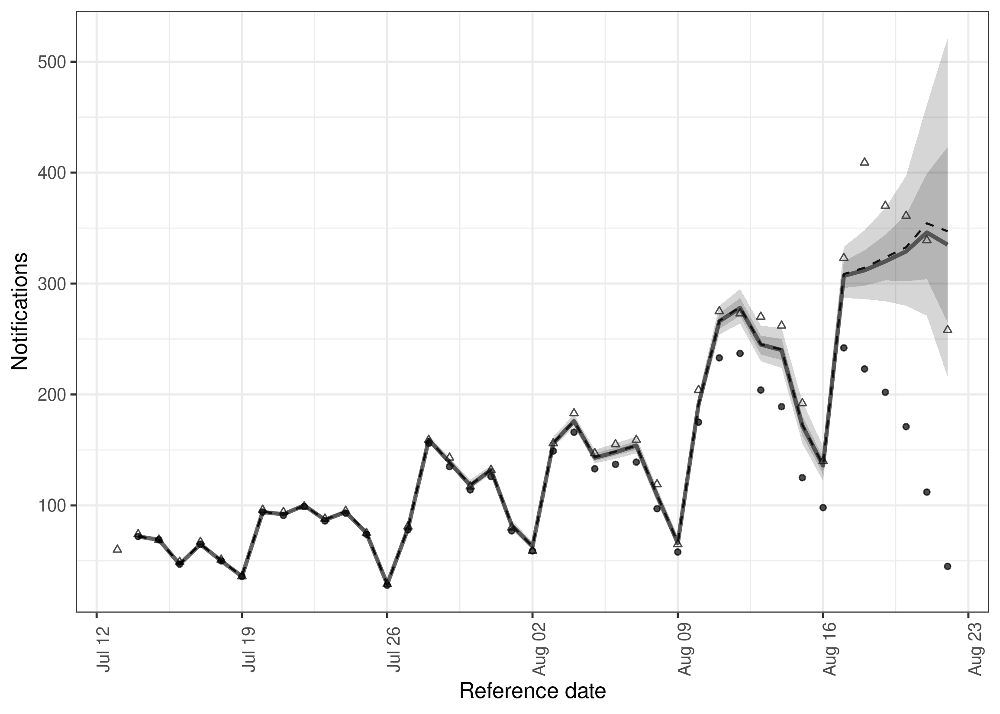
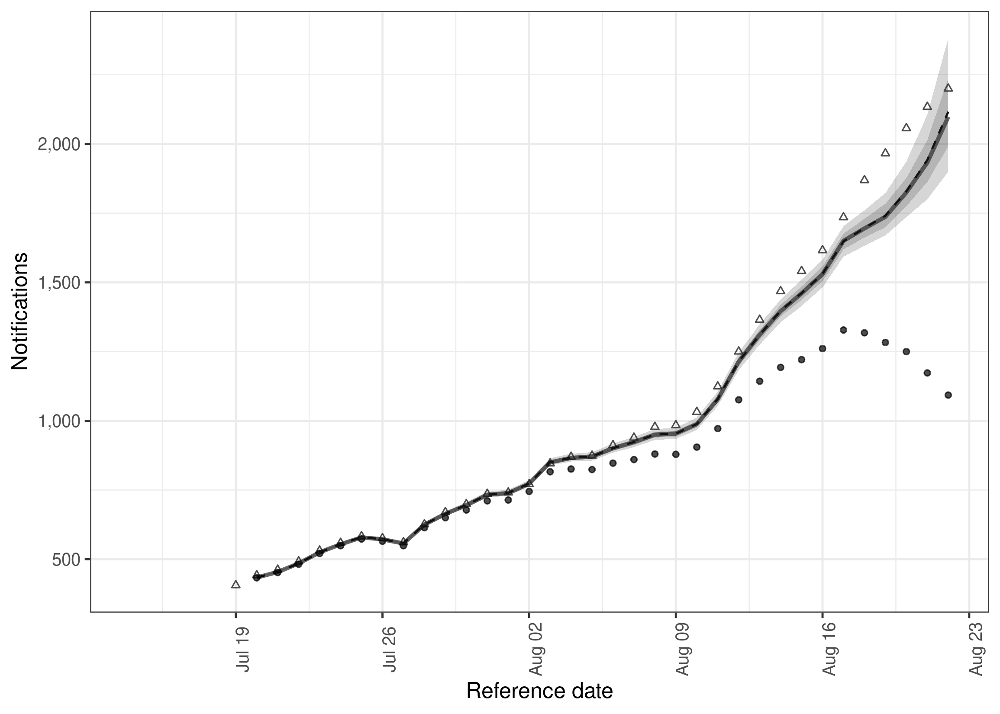

Tools to enable flexible and efficient hierarchical nowcasting of right-truncated epidemiological time-series using a semi-mechanistic Bayesian model with support for a range of reporting and generative processes. Nowcasting, in this context, is gaining situational awareness using currently available observations and the reporting patterns of historical observations. This can be useful when tracking the spread of infectious disease in real-time: without nowcasting, changes in trends can be obfuscated by partial reporting or their detection may be delayed due to the use of simpler methods like truncation. While the package has been designed with epidemiological applications in mind, it could be applied to any set of right-truncated time-series count data.
Installation
Installing the package
Install the stable development version of the package with:
install.packages("epinowcast", repos = "https://epiforecasts.r-universe.dev")Alternatively, install the stable development from GitHub using the following,
remotes::install_github("epiforecasts/epinowcast", dependencies = TRUE)The unstable development version can also be installed from GitHub using the following,
remotes::install_github("epiforecasts/epinowcast@develop", dependencies = TRUE)Installing CmdStan
If you don’t already have CmdStan installed then, in addition to installing epinowcast, it is also necessary to install CmdStan using CmdStanR’s install_cmdstan() function to enable model fitting in epinowcast. A suitable C++ toolchain is also required. Instructions are provided in the Getting started with CmdStanR vignette. See the CmdStanR documentation for further details and support.
cmdstanr::install_cmdstan()Quick start
In this quick start we use COVID-19 hospitalisations by date of positive test in Germany available up to the 1st of October 2021 to demonstrate the specification and fitting of a simple nowcasting model using epinowcast. Examples using more complex models are available in the package vignettes and in the papers linked to in the literature vignette.
Package
As well as epinowcast this quick start makes use of data.table and ggplot2 which are both installed when epinowcast is installed.
Data
Nowcasting is effectively the estimation of reporting patterns for recently reported data. This requires data on these patterns for previous observations and typically this means the time series of data as reported on multiple consecutive days (in theory non-consecutive days could be used but this is not yet supported in epinowcast). For this quick start these data are sourced from the Robert Koch Institute via the Germany Nowcasting hub where they are deconvolved from weekly data and days with negative reported hospitalisations are adjusted.
Below we first filter for a snapshot of retrospective data available 40 days before the 1st of October that contains 40 days of data and then produce the nowcast target based on the latest available hospitalisations by date of positive test.
nat_germany_hosp <-
germany_covid19_hosp[location == "DE"][age_group %in% "00+"] |>
enw_filter_report_dates(latest_date = "2021-10-01")
retro_nat_germany <- nat_germany_hosp |>
enw_filter_report_dates(remove_days = 40) |>
enw_filter_reference_dates(include_days = 40)
retro_nat_germany
#> reference_date location age_group confirm report_date
#> 1: 2021-07-13 DE 00+ 21 2021-07-13
#> 2: 2021-07-14 DE 00+ 22 2021-07-14
#> 3: 2021-07-15 DE 00+ 28 2021-07-15
#> 4: 2021-07-16 DE 00+ 19 2021-07-16
#> 5: 2021-07-17 DE 00+ 20 2021-07-17
#> ---
#> 857: 2021-07-14 DE 00+ 72 2021-08-21
#> 858: 2021-07-15 DE 00+ 69 2021-08-22
#> 859: 2021-07-13 DE 00+ 59 2021-08-21
#> 860: 2021-07-14 DE 00+ 72 2021-08-22
#> 861: 2021-07-13 DE 00+ 59 2021-08-22
latest_germany_hosp <- nat_germany_hosp |>
enw_latest_data() |>
enw_filter_reference_dates(remove_days = 40, include_days = 40)
head(latest_germany_hosp, n = 10)
#> reference_date location age_group confirm report_date
#> 1: 2021-07-13 DE 00+ 60 2021-10-01
#> 2: 2021-07-14 DE 00+ 74 2021-10-01
#> 3: 2021-07-15 DE 00+ 69 2021-10-01
#> 4: 2021-07-16 DE 00+ 49 2021-10-01
#> 5: 2021-07-17 DE 00+ 67 2021-10-01
#> 6: 2021-07-18 DE 00+ 51 2021-10-01
#> 7: 2021-07-19 DE 00+ 36 2021-10-01
#> 8: 2021-07-20 DE 00+ 96 2021-10-01
#> 9: 2021-07-21 DE 00+ 94 2021-10-01
#> 10: 2021-07-22 DE 00+ 99 2021-10-01Data preprocessing and model specification
Process reported data into format required for epinowcast and return in a data.table. At this stage specify grouping (i.e age, location) if any. It can be useful to check this output before beginning to model to make sure everything is as expected.
pobs <- enw_preprocess_data(retro_nat_germany, max_delay = 40)
pobs
#> obs new_confirm latest
#> 1: <data.table[860x9]> <data.table[860x11]> <data.table[41x10]>
#> missing_reference reporting_triangle metareference metareport
#> 1: <data.table[0x6]> <data.table[41x42]> <data.table[41x9]> <data.table[80x12]>
#> metadelay time snapshots by groups max_delay max_date
#> 1: <data.table[40x4]> 41 41 1 40 2021-08-22Construct a parametric lognormal intercept only model for the date of reference using the metadata produced by enw_preprocess_data(). Note that epinowcast uses a sparse design matrix for parametric delay distributions to reduce runtimes so the design matrix shows only unique rows with index containing the mapping to the full design matrix.
reference_module <- enw_reference(~1, distribution = "lognormal", data = pobs)Construct a model with a random effect for the day of report using the metadata produced by enw_preprocess_data().
report_module <- enw_report(~ (1 | day_of_week), data = pobs)Model fitting
First compile the model. This step can be left to epinowcast but here we want to use multiple cores per chain to speed up model fitting and so need to compile the model with this feature turned on.
model <- enw_model(threads = TRUE)We now fit the model and produce a nowcast using this fit. Note that here we use two chains each using two threads as a demonstration but in general using 4 chains is recommended. Also note that warm-up and sampling iterations have been set below default values to reduce compute requirements but this may not be sufficient for many real world use cases. Finally, note that here we have silenced fitting progress and potential warning messages for the purposes of keeping this quick start short but in general this should not be done.
options(mc.cores = 2)
nowcast <- epinowcast(pobs,
reference = reference_module,
report = report_module,
fit = enw_fit_opts(,
save_warmup = FALSE, pp = TRUE,
chains = 2, threads_per_chain = 2,
iter_sampling = 500, iter_warmup = 500,
show_messages = FALSE, refresh = 0
),
model = model
)
#> Running MCMC with 2 parallel chains, with 2 thread(s) per chain...
#>
#> Chain 2 finished in 65.5 seconds.
#> Chain 1 finished in 77.3 seconds.
#>
#> Both chains finished successfully.
#> Mean chain execution time: 71.4 seconds.
#> Total execution time: 77.3 seconds.Results
Print the output from epinowcast which includes diagnostic information, the data used for fitting, and the cmdstanr object.
nowcast
#> obs new_confirm latest
#> 1: <data.table[860x9]> <data.table[860x11]> <data.table[41x10]>
#> missing_reference reporting_triangle metareference metareport
#> 1: <data.table[0x6]> <data.table[41x42]> <data.table[41x9]> <data.table[80x12]>
#> metadelay time snapshots by groups max_delay max_date
#> 1: <data.table[40x4]> 41 41 1 40 2021-08-22
#> fit data fit_args samples max_rhat
#> 1: <CmdStanMCMC[32]> <list[52]> <list[8]> 1000 1.02
#> divergent_transitions per_divergent_transitions max_treedepth
#> 1: 0 0 8
#> no_at_max_treedepth per_at_max_treedepth run_time
#> 1: 5 0.005 77.3Summarise the nowcast for the latest snapshot of data.
nowcast |>
summary(probs = c(0.05, 0.95)) |>
head(n = 10)
#> reference_date report_date .group max_confirm location age_group confirm
#> 1: 2021-07-14 2021-08-22 1 72 DE 00+ 72
#> 2: 2021-07-15 2021-08-22 1 69 DE 00+ 69
#> 3: 2021-07-16 2021-08-22 1 47 DE 00+ 47
#> 4: 2021-07-17 2021-08-22 1 65 DE 00+ 65
#> 5: 2021-07-18 2021-08-22 1 50 DE 00+ 50
#> 6: 2021-07-19 2021-08-22 1 36 DE 00+ 36
#> 7: 2021-07-20 2021-08-22 1 94 DE 00+ 94
#> 8: 2021-07-21 2021-08-22 1 91 DE 00+ 91
#> 9: 2021-07-22 2021-08-22 1 99 DE 00+ 99
#> 10: 2021-07-23 2021-08-22 1 86 DE 00+ 86
#> cum_prop_reported delay prop_reported mean median sd mad q5
#> 1: 1 39 0 72.000 72 0.0000000 0.0000 72
#> 2: 1 38 0 69.032 69 0.1816838 0.0000 69
#> 3: 1 37 0 47.083 47 0.2796233 0.0000 47
#> 4: 1 36 0 65.218 65 0.4865313 0.0000 65
#> 5: 1 35 0 50.264 50 0.5163047 0.0000 50
#> 6: 1 34 0 36.246 36 0.4957113 0.0000 36
#> 7: 1 33 0 94.462 94 0.6833908 0.0000 94
#> 8: 1 32 0 91.706 91 0.8845034 0.0000 91
#> 9: 1 31 0 100.074 100 1.1035134 1.4826 99
#> 10: 1 30 0 87.203 87 1.1493964 1.4826 86
#> q95 rhat ess_bulk ess_tail
#> 1: 72 NA NA NA
#> 2: 69 1.0036652 1002.1341 1000.1203
#> 3: 48 0.9982150 955.3026 949.0821
#> 4: 66 0.9984208 956.4874 936.4123
#> 5: 51 1.0012658 959.6633 845.4600
#> 6: 37 0.9990564 893.7362 875.3805
#> 7: 96 0.9993801 587.1606 617.8809
#> 8: 93 1.0017126 1049.6453 1010.8469
#> 9: 102 0.9991004 1013.5419 884.5519
#> 10: 89 0.9994546 849.4900 744.0604Plot the summarised nowcast against currently observed data (or optionally more recent data for comparison purposes).
plot(nowcast, latest_obs = latest_germany_hosp)
Plot posterior predictions for observed notifications by date of report as a check of how well the model reproduces the observed data.
plot(nowcast, type = "posterior") +
facet_wrap(vars(reference_date), scale = "free")
Rather than using the methods supplied for epinowcast directly, package functions can also be used to extract nowcast posterior samples, summarise them, and then plot them. This is demonstrated here by plotting the 7 day incidence for hospitalisations.
# extract samples
samples <- summary(nowcast, type = "nowcast_samples")
# Take a 7 day rolling sum of both samples and observations
cols <- c("confirm", "sample")
samples[, (cols) := lapply(.SD, frollsum, n = 7),
.SDcols = cols, by = ".draw"
][!is.na(sample)]
#> reference_date report_date .group max_confirm location age_group confirm
#> 1: 2021-07-20 2021-08-22 1 94 DE 00+ 433
#> 2: 2021-07-20 2021-08-22 1 94 DE 00+ 433
#> 3: 2021-07-20 2021-08-22 1 94 DE 00+ 433
#> 4: 2021-07-20 2021-08-22 1 94 DE 00+ 433
#> 5: 2021-07-20 2021-08-22 1 94 DE 00+ 433
#> ---
#> 33996: 2021-08-22 2021-08-22 1 45 DE 00+ 1093
#> 33997: 2021-08-22 2021-08-22 1 45 DE 00+ 1093
#> 33998: 2021-08-22 2021-08-22 1 45 DE 00+ 1093
#> 33999: 2021-08-22 2021-08-22 1 45 DE 00+ 1093
#> 34000: 2021-08-22 2021-08-22 1 45 DE 00+ 1093
#> cum_prop_reported delay prop_reported .chain .iteration .draw sample
#> 1: 1 33 0 1 1 1 435
#> 2: 1 33 0 1 2 2 433
#> 3: 1 33 0 1 3 3 436
#> 4: 1 33 0 1 4 4 433
#> 5: 1 33 0 1 5 5 433
#> ---
#> 33996: 1 0 1 2 496 996 1960
#> 33997: 1 0 1 2 497 997 2253
#> 33998: 1 0 1 2 498 998 1992
#> 33999: 1 0 1 2 499 999 2014
#> 34000: 1 0 1 2 500 1000 2069
latest_germany_hosp_7day <- copy(latest_germany_hosp)[
,
confirm := frollsum(confirm, n = 7)
][!is.na(confirm)]
# Summarise samples
sum_across_last_7_days <- enw_summarise_samples(samples)
# Plot samples
enw_plot_nowcast_quantiles(sum_across_last_7_days, latest_germany_hosp_7day)
Learning more
The package has extensive documentation as well as vignettes describing the underlying methodology, and several case studies. Please see the package site for details. Note that the development version of the package also has supporting documentation which are available here.
Citation
If using epinowcast in your work please consider citing it using the following,
#>
#> To cite epinowcast in publications use:
#>
#> Sam Abbott, Adrian Lison, and Sebastian Funk (2021). epinowcast:
#> Flexible hierarchical nowcasting, DOI: 10.5281/zenodo.5637165
#>
#> A BibTeX entry for LaTeX users is
#>
#> @Article{,
#> title = {epinowcast: Flexible hierarchical nowcasting},
#> author = {Sam Abbott and Adrian Lison and Sebastian Funk},
#> journal = {Zenodo},
#> year = {2021},
#> doi = {10.5281/zenodo.5637165},
#> }How to make a bug report or feature request
Please briefly describe your problem and what output you expect in an issue. If you have a question, please don’t open an issue. Instead, ask on our Q and A page. See our contributing guide for more information.
Contributing
We welcome contributions and new contributors! We particularly appreciate help on priority problems in the issues. Please check and add to the issues, and/or add a pull request. See our contributing guide for more information.
If interested in expanding the functionality of the underlying model note that epinowcast allows users to pass in their own models meaning that alternative parameterisations, for example altering the forecast model used for inferring expected observations, may be easily tested within the package infrastructure. Once this testing has been done alterations that increase the flexibility of the package model and improves its defaults are very welcome via pull request or other communication with the package authors. Even if not wanting to add your updated model to the package please do reach out as we would love to hear about your use case.
Code of Conduct
Please note that the epinowcast project is released with a Contributor Code of Conduct. By contributing to this project, you agree to abide by its terms.